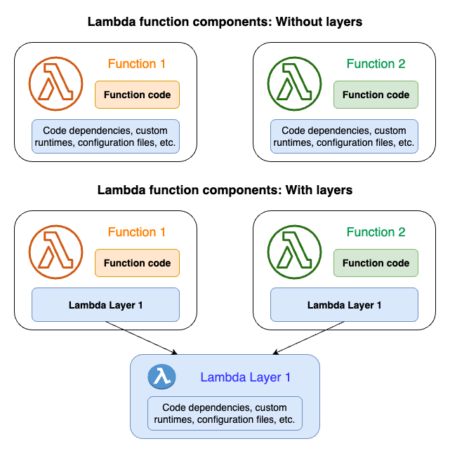

Lambda Layer
A Lambda layer is a .zip file archive that contains supplementary code or data. Layers usually contain library dependencies, a custom runtime, or configuration files.
You can find full documentation here.
The following diagram represents how does Lambda layer work.

In general, you might want to create a Lambda layer whenever you have code or dependencies that need to be shared or managed independently of your function code. Creating a layer can help you simplify the deployment process, improve code reuse, and make it easier to manage dependencies across multiple functions.
Main Benefits of Using Layers
1. Fast Mounting for Short Cold Starts: Lambda layers allow you to include shared code, dependencies, or runtime libraries separately from your function code. When a function is invoked, Lambda can mount the layer alongside the function’s execution environment, significantly reducing cold start times. This fast mounting capability ensures that your functions start quickly, providing better responsiveness to user requests and improving overall performance.
2. Simplified Maintenance of Shared Libraries: By encapsulating shared code and dependencies within layers, you can centralize the management and maintenance of these components. This simplifies the development process, as you can update, version, and distribute common libraries independently of your function code. Additionally, using layers promotes code reuse and helps maintain consistency across multiple functions within your serverless application.
SOSW Layer
SOSW layer encapsulates essential components implemented as AWS Lambda functions, facilitating the orchestration of asynchronous invocations of Lambda functions within the AWS ecosystem. The SOSW library simplifies the management of distributed tasks and workflows in serverless applications, offering features such as asynchronous invocation, fault tolerance, scalability, monitoring, and logging. By utilizing the SOSW layer, developers can efficiently orchestrate serverless workflows, streamline task execution, and enhance the resilience and scalability of their serverless applications.
How to start
Create deploy.sh file by using
deploy.sh.
How to run
While in the same folder as your deploy.sh file just run:
./deploy.sh [-v branch] [-p profile]
Installs SOSW from latest pip version, or from a specific branch if you use -v. Use -p in case you have specific profile (not the default one) in your .aws/config with appropriate permissions. It will create a folder with all dependencies. You only need to pack it into zip-archive.
What’s next?
You simply need to load layer zip file to your s3 bucket and deploy Lambda layer with CloudFormation or AWS SAM by using one of the following templates.
Initial Layer creation
CloudFormation
To deploy a layer by CloudFormation you will need to create a .yaml file with sosw-layer.yaml.
And after create a stack in AWS CloudFormation.
To create a stack you run the aws cloudformation create-stack command.
You must provide the stack name, the location of a valid template, and any input parameters.
aws cloudformation create-stack \
--stack-name myteststack \
--template-body file:///home/testuser/mytemplate.json \
--parameters ParameterKey=Parm1,ParameterValue=test1 ParameterKey=Parm2,ParameterValue=test2
Or upload it directly via GUI.
AWS SAM
To deploy layer with AWS SAM you will simply need to create two files samconfig.toml and template.yaml
which are represented below.
After you create these files you can run them just by entering sam build && sam deploy in your console.
How to connect an AWS Layer to your Lambda Function?
Connecting a layer to a Lambda resource in AWS CloudFormation involves specifying the ARN (Amazon Resource Name) of the layer when defining the Lambda function. This connection enables the Lambda function to utilize the code and dependencies provided by the layer.
Here’s a basic CloudFormation template snippet demonstrating how to connect a layer to a Lambda function:
Resources:
MyLambdaLayer:
Type: AWS::Lambda::LayerVersion
Properties:
ContentUri: my_sosw_layer.zip
CompatibleRuntimes:
- python3.10
- python3.11
- python3.12
- python3.13
MyLambdaFunction:
Type: AWS::Lambda::Function
Properties:
Code:
S3Bucket: my_bucket
S3Key: my_function.zip
Handler: app.lambda_handler
Runtime: python3.13
Layers:
- !Ref MyLambdaLayer
Update Layer
To update a layer version:
1. Publish a New Version: Make changes to your layer code or configuration and publish a new version using the AWS Lambda console, AWS CLI, or SDK. Lambda will automatically increment the version number and create a new layer version.
2. Update CloudFormation Templates: After publishing a new layer version, update your CloudFormation templates to reference the latest version ARN. Ensure that the ContentUri property points to the updated layer content, and update any other relevant properties if necessary.
3. Update CloudFormation Stacks: Once your templates are updated, use AWS CloudFormation or SAM to update the stacks that use the updated layer. This will apply the changes and ensure that functions within your stacks use the latest layer version.
Versions
A layer version is an immutable snapshot of a specific version of a layer. When you create a new layer, Lambda creates a new layer version with a version number of 1. Each time you publish an update to the layer, Lambda increments the version number and creates a new layer version.
Every layer version is identified by a unique Amazon Resource Name (ARN). When adding a layer to the function, you must specify the exact layer version you want to use.
Warning
The correct way as of Dec 2025 is to publish version to AWS SSM Parameter Store and import from there in Lambda stacks.
You can also use layers_versions_changer.py to automate the process of updating layer versions across all CloudFormation and SAM templates in your project. This script intelligently replaces placeholders in your templates with the actual layer version, ensuring that functions within your project automatically use the latest layer versions without manual intervention. This streamlines the management of layer versions across your serverless applications, improving efficiency and ensuring consistency in your deployment process.
Check that you changed the next line in your template.yaml from :
Layers:
- !Sub "arn:aws:lambda:${AWS::Region}:${AWS::AccountId}:layer:sosw:1"
to
Layers:
- !Sub "arn:aws:lambda:${AWS::Region}:${AWS::AccountId}:layer:sosw:SOSW_LAYER_PLACEHOLDER"
Note: Ensure to update the layer version in your CloudFormation templates when necessary, especially when introducing changes or fixes to your layer code. This ensures that your functions utilize the latest enhancements and improvements provided by the updated layer versions.